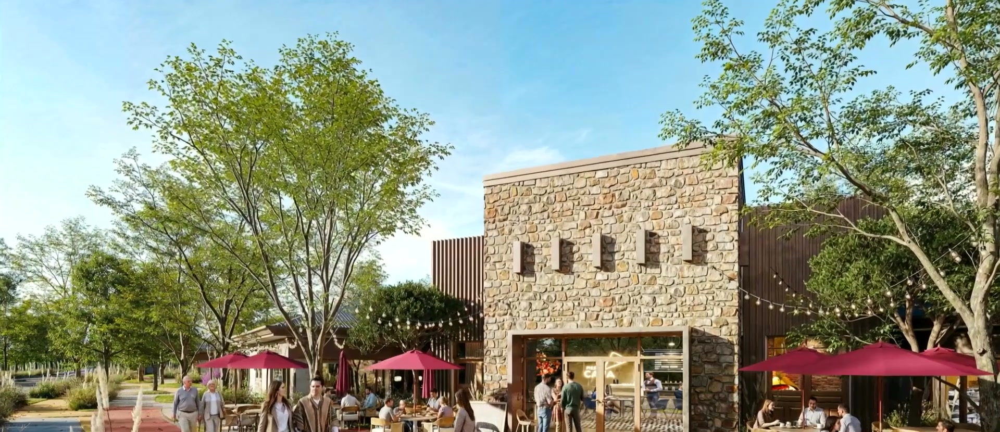
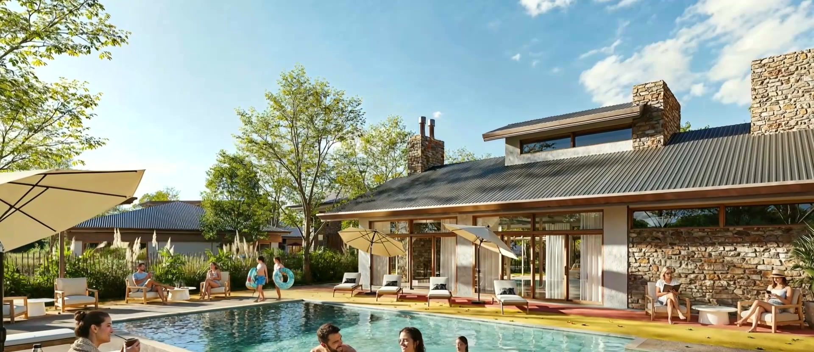
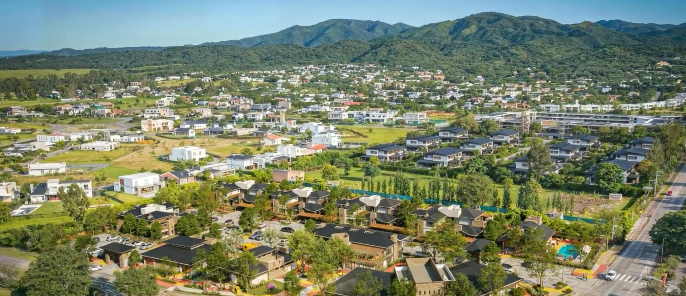
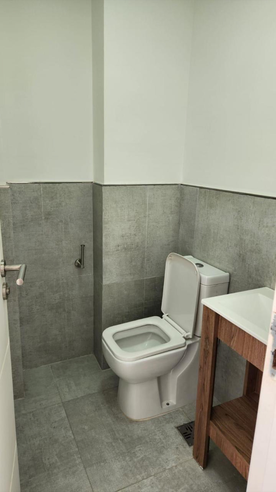
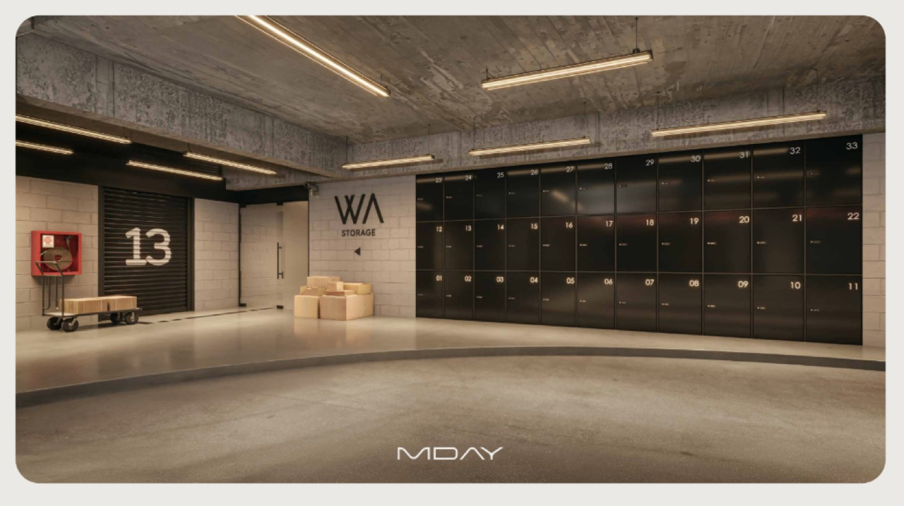
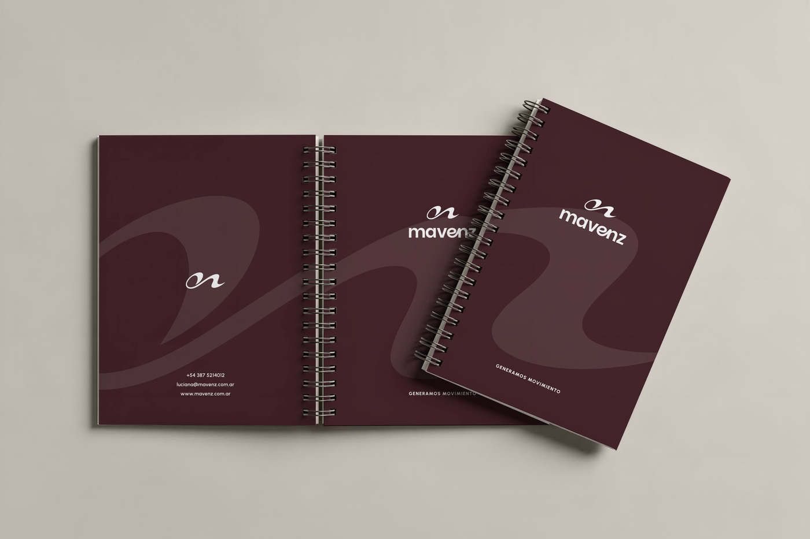
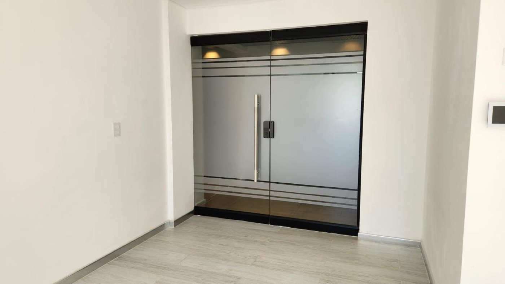
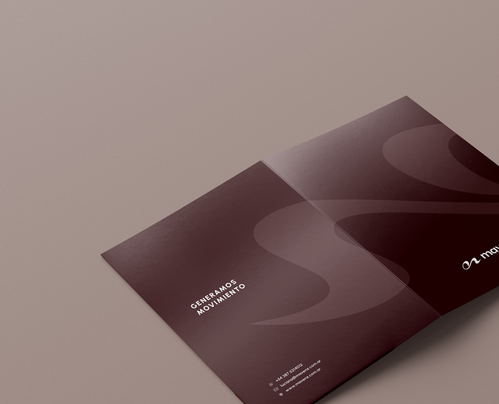

Patrimonio, disfrute y renta dentro de una misma estrategia. El crecimiento sostenido del turismo sostiene la ocupación.
Casas de fin de semana · Cabañas · Hoteles boutiqueSALTA, ARGENTINA
Generamos
movimiento.
El partner estratégico que mueve el Real Estate de Salta. Detectamos oportunidades, diseñamos estrategias y potenciamos la comercialización.



CARDINAL, San Lorenzo Chico · los dos primeros son renders; el tercero, un fotomontaje sobre toma aérea
San Lorenzo Chico, Salta · toma aérea propia
Seguir bajando ↓
No somos una inmobiliaria tradicional.
No somos solamente una comercializadora.
No somos una agencia.
Somos el partner estratégico que mueve el Real Estate.
El universo Mavenz
Cuatro áreas, un mismo criterio. Y todos los proyectos girando alrededor.
- Estrategia. Leemos el mercado antes de que se mueva.
- Desarrollo de Negocios. Detectamos y estructuramos oportunidades.
- Comercialización. Activamos la venta con foco y con criterio.
- Gestión y Evolución. Acompañamos el ciclo completo de cada proyecto.
El Método
Un ciclo que no termina: cuando el movimiento se genera, vuelve a empezar.
Descubrir
Escuchamos el territorio y los datos antes que las tendencias.
Diseñar
Estrategia y marca a medida de cada proyecto.
Conectar
Unimos desarrolladores, inversores y personas.
Activar
Lanzamos la comercialización en el momento justo.
Generar movimiento
El proyecto toma vida propia. Y el ciclo vuelve a empezar.
SAN LORENZO CHICO
Leer un territorio
es verlo antes.
Pieza de CARDINAL · tomas aéreas y renders, sin sonido
Ver los proyectos ↓
El Mapa Mavenz
Seis territorios leídos con las mismas cuatro preguntas: qué está cambiando, quién lo elige, qué oportunidades aparecen y qué ve Mavenz.
¿Qué está cambiando?
Casonas y edificios patrimoniales entran en reconversión.
¿Quién lo elige?
Profesionales que quieren vivir cerca de todo.
¿Qué oportunidades aparecen?
Reciclaje de unidades con valor histórico.
¿Qué ve Mavenz?
Un centro que vuelve a ser deseable.
Los proyectos
Cada proyecto vive dentro de Mavenz con su propia identidad y su propio destino.
CARDINAL
San Lorenzo Chico · Salta
Todas las imágenes de CARDINAL son renders del proyecto, no fotografías. Preferimos decirlo.
6.069 m²de terreno
35 unidades
5 bloques residenciales
8 tipologías, de 74 a 160 m²
Un barrio pensado para quedarse: cinco bloques, una calle interior tranquila y la sensación de llegar a un lugar que se siente propio.
LAS OCHO TIPOLOGÍAS
| TIPO | PLANTA | PROPIA | CUBIERTA |
|---|---|---|---|
| A | Planta baja | 77,00 m² | 51,90 m² |
| B | Planta baja | 75,90 m² | 50,80 m² |
| C | Planta baja | 83,70 m² | 64,70 m² |
| D | Planta baja | 84,40 m² | 65,20 m² |
| E | Planta alta | 74,50 m² | 51,90 m² |
| F | Planta alta | 82,50 m² | 55,10 m² |
| G | Planta alta | 81,50 m² | 53,70 m² |
| H | Planta alta | 160,30 m² | 116,00 m² |
Galería con asador privado en cada unidad. Unificación opcional a tres dormitorios, o dos más flexroom.
A CUÁNTO QUEDA TODO
- Centro médico2 min
- El Punto Shopping2 min
- Gastronomía3 min
- Escuelas5 min
- Combustible6 min
- Salta capital18 min
- Aeropuerto18 min
ESPACIOS COMUNES
Piscina · SUM con asador · Vestuarios · Cocheras de cortesía · Caminerías · Juegos para niños · Espacios verdes

¿Sabías que el cardenal siempre vuelve a su hogar? Un ave que representa pertenencia. Movimiento. Identidad.
WA
Storages, cocheras y oficinas · Salta
Inversión de renta en unidades de guardado, cocheras cubiertas y oficinas con la escala justa.
Storages disponibles: unidades 9 a 26, de 4,86 a 24,84 m².
Ver disponibilidad →


CAFAY
Cafayate · en desarrollo. La próxima lectura del territorio hecha proyecto.
La obra
Arrastrá para recorrerla. Lo que es render lo decimos; lo que es foto, también.








Espacio Mavenz
El canal de comercialización: todo lo que está a la venta, en un solo lugar. El listado completo vive en espaciomavenz.com.ar.

Storage · Unidad 9
14,09 m² · WA · Ref. MAV-226174
USD 35.000
Lo que movemos
Una marca madre, muchos destinos. Pasá por encima de cada uno.
Empezá por lo que querés hacer.
Cada camino tiene su propia lectura del territorio y su propio equipo. Elegí el tuyo y te mostramos qué hay.
Dónde vivir en Salta, según cómo querés vivir
No empezamos por la propiedad. Empezamos por el territorio: qué está cambiando en cada zona, quién la elige y por qué. Después aparece la casa.
- San Lorenzo Chico, para vivir y trabajar en el mismo entorno
- Zona Norte, para quienes buscan naturaleza sin perder la ciudad
- Vaqueros, verde y ciudad en quince minutos
- Microcentro, patrimonio reconvertido y vida urbana
CARDINALSan Lorenzo Chico · 35 hogares · en comercializaciónVer el proyecto →
Invertir donde el territorio todavía se está moviendo
La diferencia entre una buena y una mala inversión rara vez es la propiedad. Es el momento de la curva en que entrás.
- Renta temporaria en Cafayate, con patrimonio y disfrute en la misma decisión
- Storages y cocheras en San Lorenzo Chico, ticket bajo y demanda sostenida
- Vaqueros antes del pico, con valores de compra reales
- Reconversión de casonas patrimoniales en el centro
Desde USD 35.000Storage de 14,09 m² en WA, San Lorenzo Chico · ref. MAV-226174Ver disponibilidad →
De la tierra al proyecto, y del proyecto al mercado
Trabajamos con desarrolladores desde antes de que exista el proyecto: lectura de territorio, definición de producto, estrategia comercial y comercialización.
- Análisis de oportunidad y de producto
- Estrategia comercial y de posicionamiento
- Comercialización con equipo propio
- Reporte de avance para el desarrollista

El Método MavenzDescubrir · Diseñar · Conectar · Activar · Generar movimientoVer el método →
Comercializar con criterio, no con volumen
Preferimos tres opciones explicadas a treinta sin criterio. Si una propiedad no encaja con quien pregunta, lo decimos y explicamos por qué.
- Tasación con lectura de zona, no solo de metros
- Publicación en Espacio Mavenz y en los portales
- Seguimiento registrado de cada consulta y cada visita
- Un solo interlocutor durante toda la operación
Espacio MavenzEl canal donde vive el listado completoAbrir ↗
Invertir es elegir el momento de la curva.
Las mejores oportunidades no aparecen de un día para el otro. Empiezan mucho antes, cuando un territorio comienza a transformarse. Estas son las que estamos mirando hoy.
Unidades de guardado y cocheras cubiertas en San Lorenzo Chico. Escala chica, mantenimiento bajo y demanda sostenida.
Desde USD 35.000 · 4,86 a 24,84 m²Una curva de crecimiento que todavía no llegó a su máximo, con valores de compra reales y un código de planeamiento nuevo.
Condominios de media densidad · Lofts · Eco-housingCasonas patrimoniales fuera del mercado residencial tradicional, que hoy buscan una forma nueva de existir.
Oficinas · Hotelería boutique · Gastronomía · Uso mixtoAntes de mandarte una opción preferimos entender para qué, para cuándo y con qué margen se decide. Una propuesta que llega antes de esa conversación es una propuesta que hay que rehacer.
Conversar una inversiónSi estás desarrollando, entramos antes.
No aparecemos cuando el proyecto está terminado y hay que venderlo. Trabajamos desde la lectura del terreno y la definición del producto.
Leemos el terreno
Qué permite el código, quién vive alrededor, hacia dónde se mueve la zona y qué falta.
Definimos el producto
Qué tipologías, qué superficies y qué precio resisten ese mercado, con datos y no con intuición.
Armamos la estrategia
Posicionamiento, canales, materiales de venta y el circuito por el que entra cada consulta.
Comercializamos
Con equipo propio, con cada conversación registrada y con reporte de avance para vos.
Hoy comercializamos CARDINAL, en San Lorenzo Chico, y acompañamos el desarrollo de CAFAY en los Valles Calchaquíes.
Conversar un desarrolloLo que más nos preguntan
¿Trabajan solo en la ciudad de Salta?
No. El Mapa Mavenz cubre seis territorios: Micro y Macrocentro, Zona Norte, San Lorenzo, la zona del Aeropuerto y San Luis, Cafayate y Cachi, y Vaqueros. Cada uno tiene su propia lectura y su propio tipo de oportunidad.
¿Cuál es el ticket más bajo para empezar a invertir?
Hoy, los storages en San Lorenzo Chico, desde USD 35.000 por una unidad de 14,09 m². Es la puerta de entrada más accesible que tenemos con demanda sostenida.
¿Qué diferencia hay entre Mavenz y Espacio Mavenz?
Mavenz es la marca que lee el territorio, arma la estrategia y acompaña a desarrolladores e inversores. Espacio Mavenz es el canal de comercialización, donde vive el listado de propiedades disponibles.
Tengo una propiedad para vender. ¿Cómo arranca?
Con una conversación, no con una tasación automática. Necesitamos entender para cuándo, con qué margen se decide y qué alternativas estás mirando. Recién ahí una propuesta tiene sentido.
¿Puedo invertir desde afuera de Salta?
Sí. Buena parte de quienes invierten en Cafayate y en San Lorenzo no viven en la zona. Coordinamos visitas, mandamos material y seguimos la operación por WhatsApp.
Las oportunidades no aparecen por casualidad. Se reconocen.
Contanos qué estás buscando y te decimos qué vemos. Te contestamos por WhatsApp dentro del día hábil.
Y esto recién se pone en movimientoPieza de marca de CARDINAL